Explore our three main categories — machines, parts and filters. All products are supplied with source quality control.
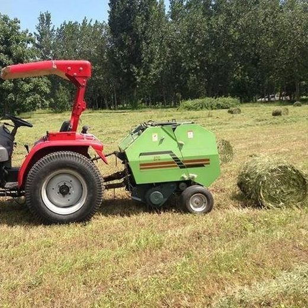
Collects and bales straw, hay and crop residue for easier transport and storage.
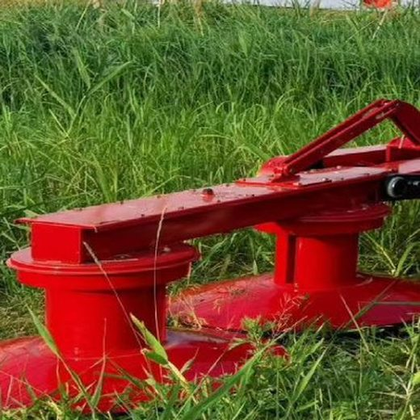
Mowing machines for hay, grass and field weeds.
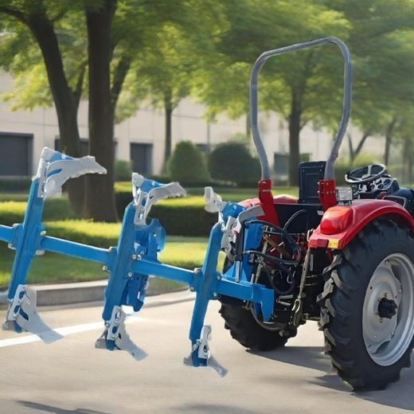
Ploughs for turning and loosening soil, mounted on tractors.
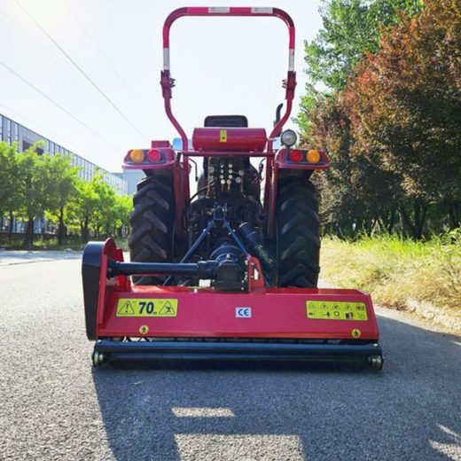
Flail mowers that chop crop residue and return it to the field.
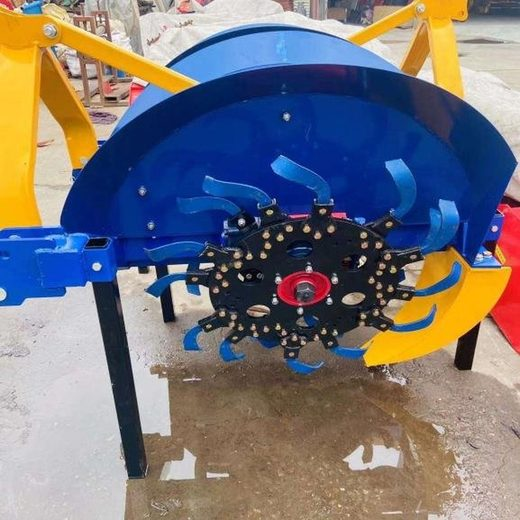
Ditchers for opening field furrows for irrigation and drainage.
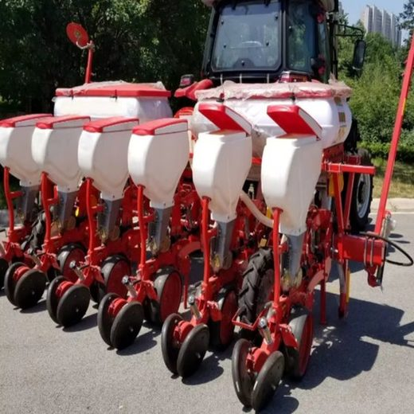
Pneumatic seeders that place seeds singly and accurately.
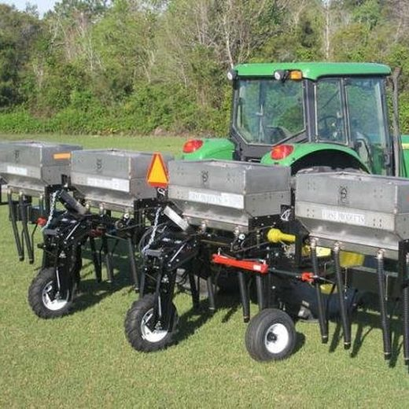
Machines for spreading or banding granular and organic fertilizer.
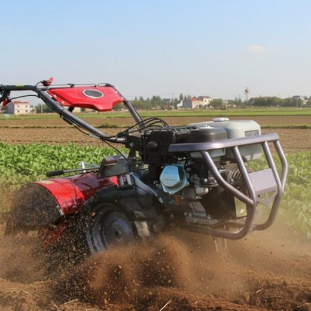
Walk-behind cultivators for small plots, greenhouses and orchards.
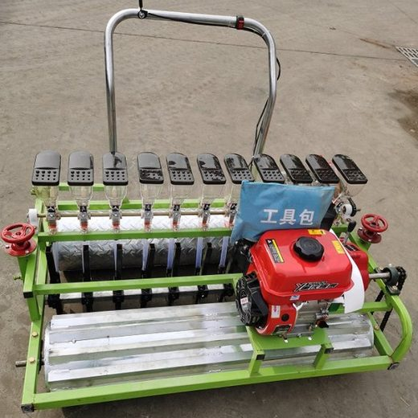
Push-type vegetable seeders with adjustable row and plant spacing.
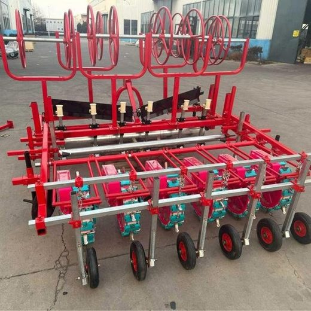
Combined units that prepare soil, sow, cover and press in one pass.
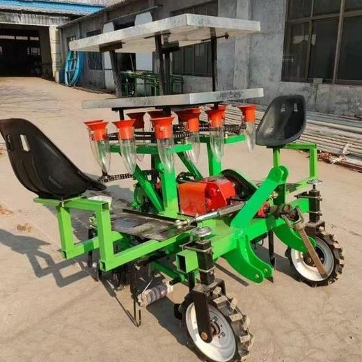
Transplanters that set vegetable seedlings and cut labour costs.
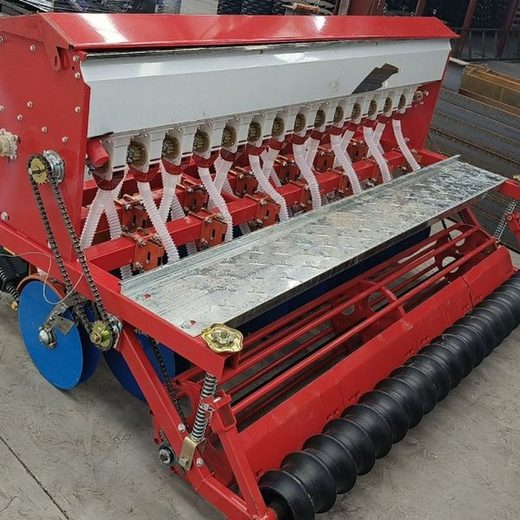
Grain seeders for wheat, maize, soybean and other field crops.
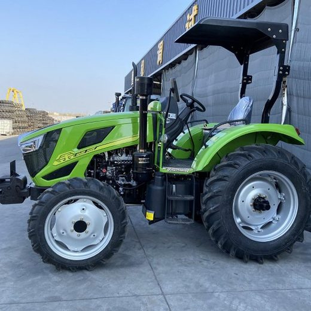
Compact tractors that can be matched with a range of implements.
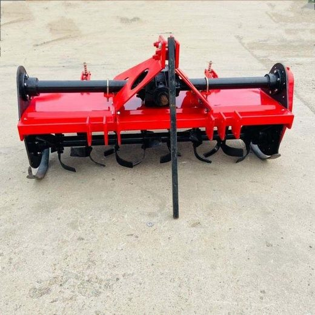
Rotary tillers that prepare and pulverise the soil before sowing.
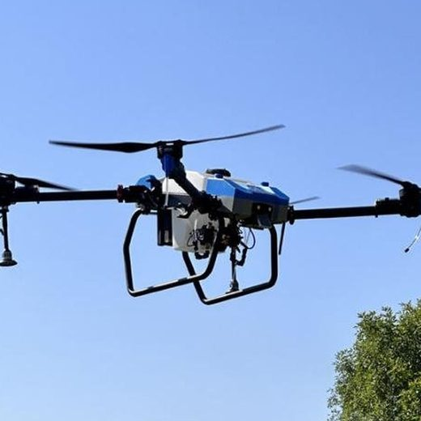
Drone sprayers for efficient crop protection in fields and orchards.
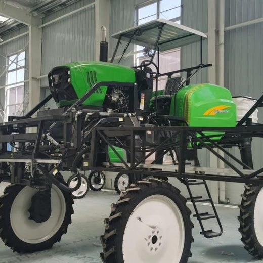
Self-propelled boom sprayers for crop protection in field crops.
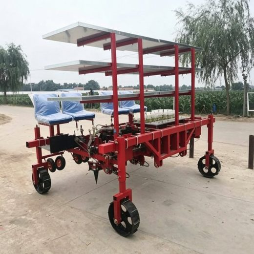
Self-propelled transplanters for larger-scale seedling planting.
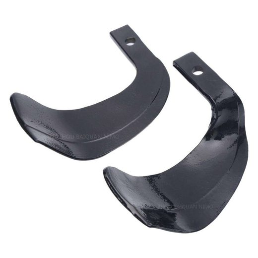
Replacement rotary tiller blades covering the common blade types.
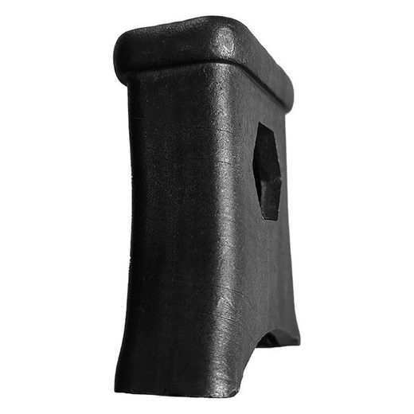
Blade holders that fix the blades to the tiller shaft.
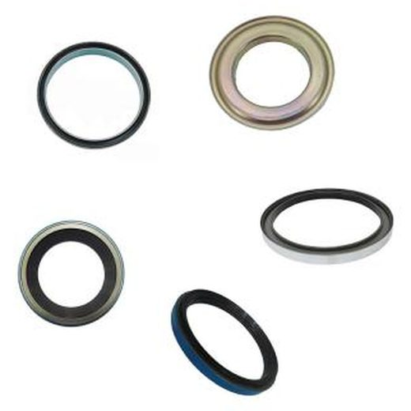
Bearing and oil seal sets for repairing drive assemblies.
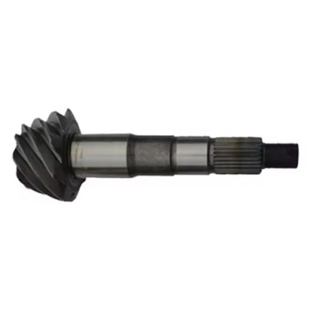
Spiral bevel gear shafts for gearboxes, supplied as matched sets.
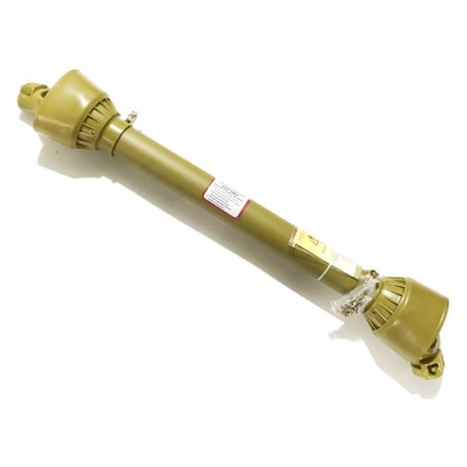
PTO drive shafts that transmit tractor power to implements.
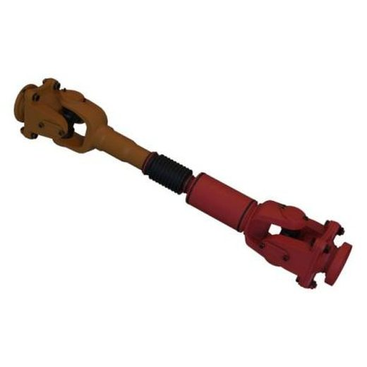
Cardan shafts for power transmission across offset angles.
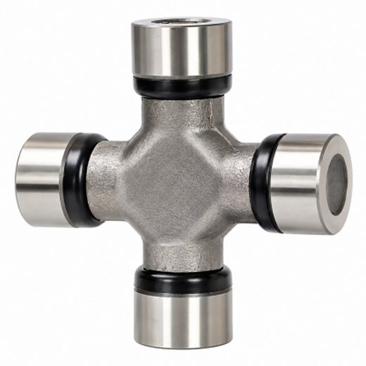
Universal joints for shaft connections and angle compensation.
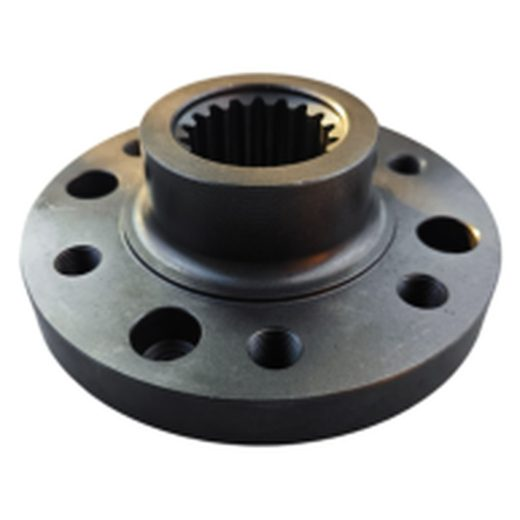
Wheel rim and flange assemblies for running gear repair.
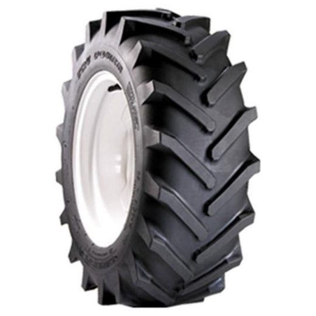
Tyres for walk-behind tillers, available in a range of sizes.
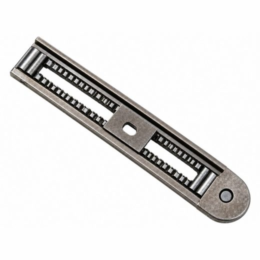
Seat slides for adjusting the seat position on agricultural machinery.
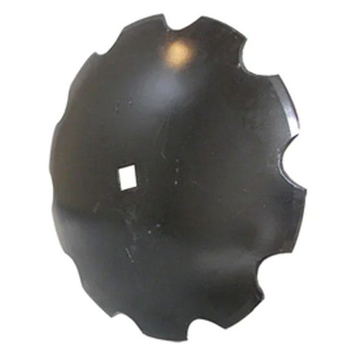
Disc blades for cutting clods and chopping stubble.
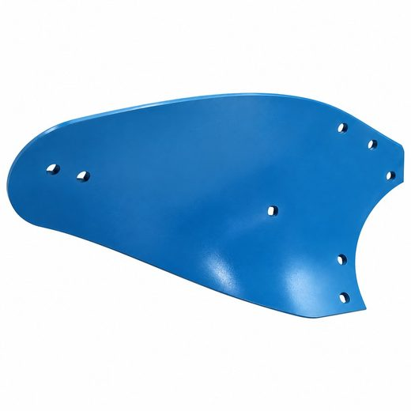
Plough body parts for turning soil and cutting roots.
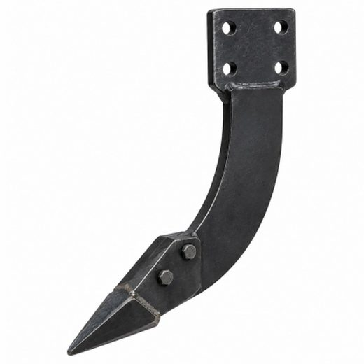
Loosening shovels for subsoilers and cultivators.
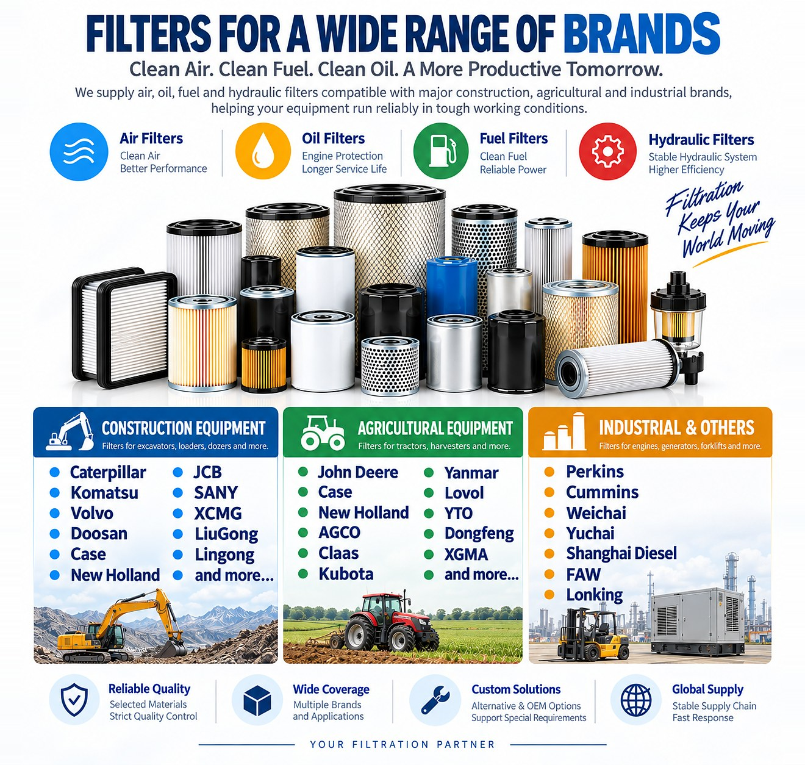
Click the image to open it in full size.
Quick answers about what we supply and how to work with us.
We supply agricultural machinery, farm machinery spare and wear parts, and replacement filters — air, oil, fuel and hydraulic — for agricultural machinery, construction machinery, heavy-duty equipment and trucks.
Our filter range covers common references for Caterpillar, Komatsu, Volvo, Doosan, Case, New Holland, JCB, SANY, XCMG, LiuGong, John Deere, Kubota, Yanmar, Perkins, Cummins and Weichai, among others.
Yes. In addition to our standard range, we provide OEM and customized services to meet different customer and market requirements.
Send us your requirement — equipment model, part number or a photo of the part — by email at sales@lavinoequip.com or on WhatsApp at +86 151 9255 7460. We usually reply within one business day.